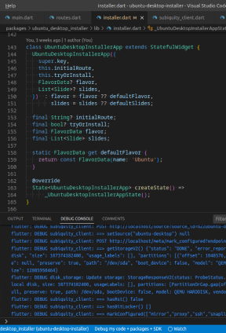

|
 |
Ən yaxşı açıq mənbə ilə tərtib edin {{ DISTRO }} tətbiq və ya veb inkişafı, data elmi və Sİ/MÖ, eləcə də devops və idarəetmə üçün ideal iş stansiyasıdır. Hər {{ DISTRO }} buraxılışı ən son alətlər zəncirini ehtiva edir və bütün əsas IDE-ləri dəstəkləyir. Visual Studio Code IDEA Ultimate Pycharm GitKraken |